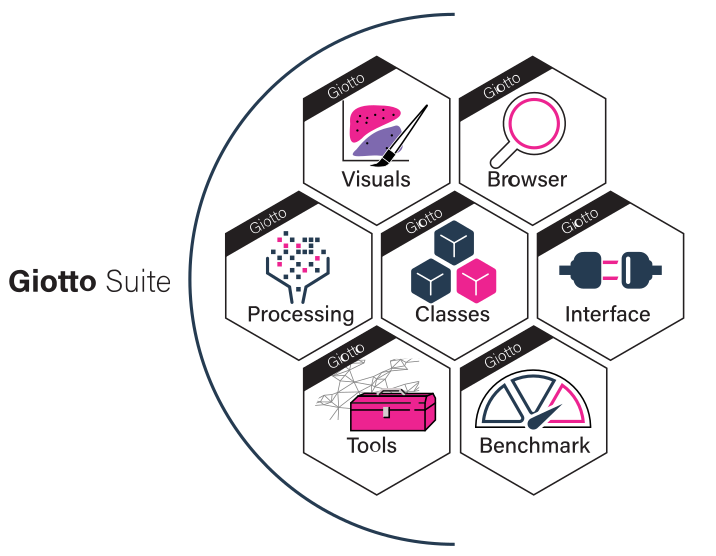

We plan to curate an ecosystem of different, related packages to modularize Giotto Suite as we extend its functionalities. Here, we detail some different helper module(s) within the Giotto Ecosystem.

This package contains the Giotto object and subobject class definitions and frameworks. Functionalities relating to data ingestion, basic object creation, data access within the Giotto object, and generics defined for the Giotto classes are all found here.
Applications of this framework and convenience functions for loading specific technologies are found in the base Giotto package.
Find more information here
To install GiottoClass run:
devtools::install_github('drieslab/GiottoClass')GiottoUtils exports functionalities that are called internally by many of the other packages in the Giotto ecosystem. These range from things such as commonly used imports to pretty prints. Users should not need to directly interact with this package.
Find more information here
To install GiottoUtils run:
devtools::install_github('drieslab/GiottoUtils')GiottoVisuals contains the main plotting functions of Giotto Suite
Find more information here
To install GiottoVisuals run:
devtools::install_github('drieslab/GiottoVisuals')This package depends on Giotto Suite and leverages various functions
within it for saving and loading Giotto objects. It contains dataset
helper functions loadGiottoMini() and
getSpatialDataset(). Note that
getSpatialDataset() was moved from Giotto Suite to
GiottoData!
In addition to dataset helpers, we have created mini Giotto Objects for testing Giotto Suite’s capabilities rapidly and streamlining the tutorial experience. GiottoData currently includes two mini Giotto Objects which are derived from Vizgen and Visium data; more mini Giotto Objects will be published in the future. Further, we include mini objects, S4 subobjects of a Giotto Object (i.e. exprObj), in an effort to make the Giotto Object structure as transparent as possible.
Find more information here
To install GiottoData run:
devtools::install_github('drieslab/GiottoData')The scripts used to create both the mini giotto objects and mini objects are available in the repository so that we may extend and/or improve them and that you may utilize them for your own purposes!
# Ensure Giotto Suite is installed
if(!"Giotto" %in% installed.packages()) {
devtools::install_github("drieslab/Giotto@suite_modular")
}
library(Giotto)
# Ensure Giotto Data is installed
if(!"GiottoData" %in% installed.packages()) {
devtools::install_github("drieslab/GiottoData")
}
library(GiottoData)
# Ensure the Python environment for Giotto has been installed
genv_exists = checkGiottoEnvironment()
if(!genv_exists){
# The following command need only be run once to install the Giotto environment
installGiottoEnvironment()
}
visium_mini = loadGiottoMini(dataset = 'visium')R version 4.3.1 (2023-06-16)
Platform: aarch64-apple-darwin20 (64-bit)
Running under: macOS Sonoma 14.1.2
Matrix products: default
BLAS: /System/Library/Frameworks/Accelerate.framework/Versions/A/Frameworks/vecLib.framework/Versions/A/libBLAS.dylib
LAPACK: /Library/Frameworks/R.framework/Versions/4.3-arm64/Resources/lib/libRlapack.dylib; LAPACK version 3.11.0
locale:
[1] en_US.UTF-8/en_US.UTF-8/en_US.UTF-8/C/en_US.UTF-8/en_US.UTF-8
time zone: America/New_York
tzcode source: internal
attached base packages:
[1] stats graphics grDevices utils datasets methods
[7] base
other attached packages:
[1] GiottoData_0.2.6.1 Giotto_4.0.0 GiottoVisuals_0.1.0
[4] GiottoClass_0.1.0 GiottoUtils_0.1.0
loaded via a namespace (and not attached):
[1] utf8_1.2.4 generics_0.1.3
[3] lattice_0.22-5 digest_0.6.33
[5] magrittr_2.0.3 evaluate_0.23
[7] grid_4.3.1 fastmap_1.1.1
[9] jsonlite_1.8.7 Matrix_1.6-4
[11] backports_1.4.1 fansi_1.0.5
[13] scales_1.3.0 codetools_0.2-19
[15] cli_3.6.1 rlang_1.1.2
[17] XVector_0.42.0 Biobase_2.60.0
[19] munsell_0.5.0 withr_2.5.2
[21] colorRamp2_0.1.0 tools_4.3.1
[23] parallel_4.3.1 checkmate_2.3.0
[25] dplyr_1.1.4 colorspace_2.1-0
[27] ggplot2_3.4.4 BiocGenerics_0.48.1
[29] reticulate_1.34.0 png_0.1-8
[31] vctrs_0.6.5 R6_2.5.1
[33] stats4_4.3.1 lifecycle_1.0.4
[35] zlibbioc_1.48.0 S4Vectors_0.40.2
[37] IRanges_2.36.0 pkgconfig_2.0.3
[39] terra_1.7-55 pillar_1.9.0
[41] gtable_0.3.4 data.table_1.14.8
[43] glue_1.6.2 Rcpp_1.0.11
[45] xfun_0.41 tibble_3.2.1
[47] tidyselect_1.2.0 rstudioapi_0.15.0
[49] knitr_1.45 igraph_1.5.1
[51] htmltools_0.5.7 rmarkdown_2.25
[53] compiler_4.3.1